<!DOCTYPE html>
<html>
    <head>
        <title>Quandry</title>
        <link rel="stylesheet" type="text/css" href="style.css" />
        <script src="script.js" type="module"></script>
        <script src="https://kit.fontawesome.com/48764efa36.js" crossorigin="anonymous"></script>
        <link rel="preconnect" href="https://fonts.gstatic.com">
        <link href="https://fonts.googleapis.com/css2?family=Source+Sans+Pro:wght@300;400;600&display=swap" rel="stylesheet">
    </head>
    <body>
        <!--
        <div id="introduction">
            <div id="logo">
                
            </div>
            <div class="text-container">
                <h1>Get the value you deserve from your data.</h1>
                <p>Single click integrations and APIs for all your favourite data sources.</p>
            </div>
            <div class="form-container">
                <form action="post">
                    <input type="text" name="introduction-email" class="introduction-email" placeholder="Enter your email.." />
                    <input type="submit" name="introduction-submit" value="Subscribe for Updates" />
                </form>
            </div>
        </div>
        <div id="contact-form">
            <h1>Business Inquiries</h1>
            <p>Contact us through the form below</p>
            <form>
                <div class="individual-name-holder">
                    <label for="individual-name">Your Name</label>
                    <input type="text" name="individual-name" />
                </div>
            </form>
        </div>
    -->
    <script id="snoise-function" type="x-shader/x-vertex">
        vec3 mod289(vec3 x) { return x - floor(x * (1.0 / 289.0)) * 289.0; }
        vec2 mod289(vec2 x) { return x - floor(x * (1.0 / 289.0)) * 289.0; }
        vec3 permute(vec3 x) { return mod289(((x*34.0)+1.0)*x); }

        float snoise(vec2 v) {
            const vec4 C = vec4(0.211324865405187,  // (3.0-sqrt(3.0))/6.0
                                0.366025403784439,  // 0.5*(sqrt(3.0)-1.0)
                                -0.577350269189626,  // -1.0 + 2.0 * C.x
                                0.024390243902439); // 1.0 / 41.0
            vec2 i  = floor(v + dot(v, C.yy) );
            vec2 x0 = v -   i + dot(i, C.xx);
            vec2 i1;
            i1 = (x0.x > x0.y) ? vec2(1.0, 0.0) : vec2(0.0, 1.0);
            vec4 x12 = x0.xyxy + C.xxzz;
            x12.xy -= i1;
            i = mod289(i); // Avoid truncation effects in permutation
            vec3 p = permute( permute( i.y + vec3(0.0, i1.y, 1.0 ))
                + i.x + vec3(0.0, i1.x, 1.0 ));

            vec3 m = max(0.5 - vec3(dot(x0,x0), dot(x12.xy,x12.xy), dot(x12.zw,x12.zw)), 0.0);
            m = m*m ;
            m = m*m ;
            vec3 x = 2.0 * fract(p * C.www) - 1.0;
            vec3 h = abs(x) - 0.5;
            vec3 ox = floor(x + 0.5);
            vec3 a0 = x - ox;
            m *= 1.79284291400159 - 0.85373472095314 * ( a0*a0 + h*h );
            vec3 g;
            g.x  = a0.x  * x0.x  + h.x  * x0.y;
            g.yz = a0.yz * x12.xz + h.yz * x12.yw;
            return 130.0 * dot(m, g);
        }
    </script>
    <script id="vertex-shader" type="x-shader/x-vertex">
        uniform float u_time;
        uniform vec2 u_randomisePosition;

        varying float vDistortion;
        varying float xDistortion;
        varying vec2 vUv;

        void main() {
            vUv = uv;
            vDistortion = snoise(vUv.xx * 3. - u_randomisePosition * 0.15);
            xDistortion = snoise(vUv.yy * 1. - u_randomisePosition * 0.05);
            vec3 pos = position;
            pos.z += (vDistortion * 35.);
            pos.x += (xDistortion * 25.);

            gl_Position = projectionMatrix * modelViewMatrix * vec4(pos, 1.0);
        }
    </script>

    <script id="fragment-shader" type="x-shader/x-fragment">
        
        vec3 rgb(float r, float g, float b) {
            return vec3(r / 255., g / 255., b / 255.);
        }

        vec3 rgb(float c) {
            return vec3(c / 255., c / 255., c / 255.);
        }

        uniform vec3 u_bg;
        uniform vec3 u_bgMain;
        uniform vec3 u_color1;
        uniform vec3 u_color2;
        uniform float u_time;

        varying vec2 vUv;
        varying float vDistortion;

        void main() {
            vec3 bg = rgb(u_bg.r, u_bg.g, u_bg.b);
            vec3 c1 = rgb(u_color1.r, u_color1.g, u_color1.b);
            vec3 c2 = rgb(u_color2.r, u_color2.g, u_color2.b);
            vec3 bgMain = rgb(u_bgMain.r, u_bgMain.g, u_bgMain.b);

            float noise1 = snoise(vUv + u_time * 0.08);
            float noise2 = snoise(vUv * 2. + u_time * 0.1);

            vec3 color = bg;
            color = mix(color, c1, noise1 * 0.6);
            color = mix(color, c2, noise2 * .4);

            color = mix(color, mix(c1, c2, vUv.x), vDistortion);

            float border = smoothstep(0.1, 0.6, vUv.x);

            color = mix(color, bgMain, 1. -border);

            gl_FragColor = vec4(color, 1.0);
        }
    </script>

    </body>
</html>